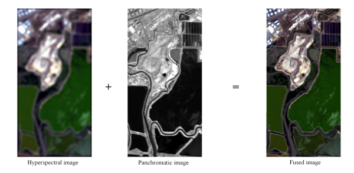

Multi-band image fusion
(see also here)
Over the last decades, an increasing number of airborne sensors have been acquiring remotely sensed images characterized by various spatial and spectral resolutions. Due to inherent physical constraints, a tradeoff between both resolutions must be found. However, current and upcoming Earth observation missions include several sensors that are able to jointly provide hyperspectral images and highly resolved multispectral or panchromatic images. Coupling both acquired images to obtain a unique high-resolution hyperspectral image is a challenging problem. We consider the problem of fusing multiple images for resolution enhancement. The fusion problem is formulated within a Bayesian estimation framework, and various priors are proposed as regularization. The maximum likelihood and Bayesian estimators are computed closed-form (solving the underlying Sylvester equation), or approximated using simulation-based (MCMC) or optimization (ADMM, block coordinate descent) algorithms.
Fig. 1. Hyperspectral pansharpening.
A particular scenario of the addressed problem, known as hyperspectral pansharpening, consists of fusing a (highly) spatially resolved panchromatic image with a (highly) spectral resolved hyperspectral image. An overview paper on this problem has been published in IEEE Geosci. Remote Sens. Magazine:
Supporting materials (toolbox for the compared algorithms and supplementary documents) are available on the OpenRemoteSensing.net website.
The problem of blind model-based fusion of multi-band and panchromatic images has been also considered in the paper presented at the IEEE Int. Conf. Multisensor Fusion Integration Intell. Syst. (MFI) in 2016:
The corresponding Matlab code for this blind approach is available below.
- matlab codes
 [ GitHub].
[ GitHub].
Fast fusion schemes based on the Sylvester matrix equation
This work proposes a fast multi-band image fusion algorithm, which combines a high-spatial low-spectral resolution image and a low-spatial high-spectral resolution image. By exploiting the properties of the circulant and downsampling matrices associated with the fusion problem, a closed-form solution for the corresponding Sylvester equation is obtained explicitly, getting rid of any iterative update step. Coupled with the alternating direction method of multipliers and the block coordinate descent method, the proposed algorithm can be easily generalized to incorporate prior information for the fusion problem, allowing a Bayesian estimator. Simulation results show that the proposed algorithm achieves the same performance as existing algorithms with the advantage of significantly decreasing the computational complexity of these algorithms.
The proposed Sylvester equation-based fusion algorithms are described in the following paper published in IEEE Trans. Image Processing:
- article
 .
.
An extended version of this paper (with additional proofs and simulations) is available as a technical report:
The corresponding Matlab code for a demo is available below.
- matlab codes
 (with dataset) [ .zip - 53.4Mo].
(with dataset) [ .zip - 53.4Mo].
An enhanced and much more robust resolution scheme has been proposed in the paper published in IEEE Signal Processing Letters:
- article .
The corresponding Matlab code for this robust fusion algorithm will be available below.
- matlab codes [ GitHub].
Prior based on sparse representation over a dictionary
A sparse regularization term is carefully designed, relying on a decomposition of the scene on a set of dictionaries. The dictionary atoms and the supports of the corresponding active coding coefficients are learned from the observed images. Then, conditionally on these dictionaries and supports, the fusion problem is solved via alternating optimization with respect to the target image (using the alternating direction method of multipliers) and the coding coefficients. Simulation results demonstrate the efficiency of the proposed algorithm when compared with state-of-the-art fusion methods.
The sparse representation-based fusion algorithm in the following paper published in IEEE Trans. Geosci. Remote Sensing:
- article .
Additional results are available in the related technical report:
The corresponding Matlab code for a demo is available below.
- matlab codes (with dataset) [ .zip - 32.5Mo ].
Prior based on a Gaussian distribution
The fusion problem is formulated within a Bayesian estimation framework. An appropriate prior distribution exploiting geometrical consideration is introduced. To compute the Bayesian estimator of the scene of interest from its posterior distribution, a Markov chain Monte Carlo algorithm is designed to generate samples asymptotically distributed according to the target distribution. To efficiently sample from this high-dimension distribution, a Hamiltonian Monte Carlo step is introduced in the Gibbs sampling strategy
The Gaussian prior-based fusion algorithm in the following paper published in IEEE J. Sel. Topics Signal Process.:
- article .
Additional results are available in the related technical report:
The corresponding Matlab code for a demo is available below.
- matlab codes (with dataset) [ .7z - 27.9Mo ].
An alternative algorithm, based on a block coordinate gradient algorithm, is described in this IEEE WHISPERS 2015 paper:
- article .
Joint fusion and unmixing of multi-band images
The problem of jointly fusing and unmixing multi-band images is specifically addressed in this paper:- article .
The corresponding Matlab code is available below.
- matlab codes [ GitHub ].